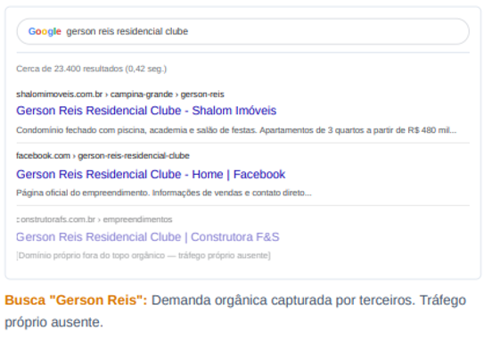
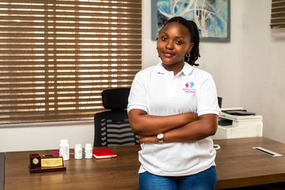
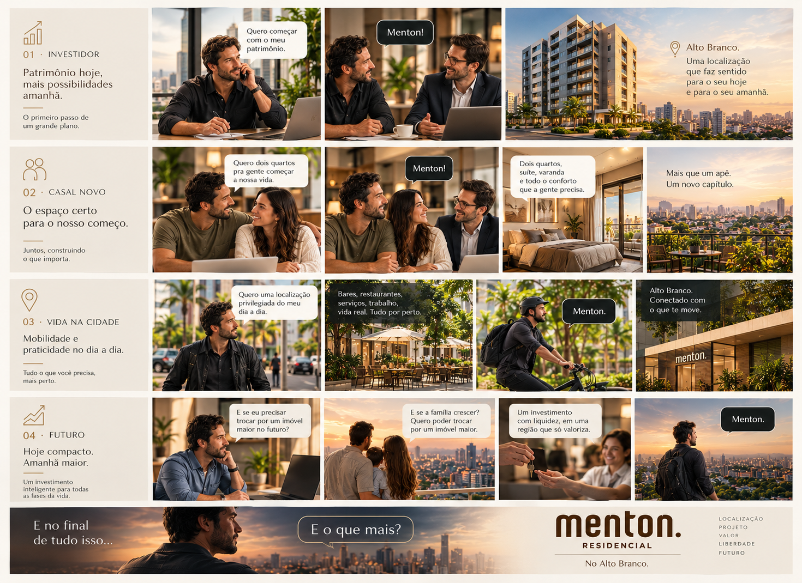

Gerson Reis
Capturar buscas por nome, localização, plantas, lazer e vida na Prata.
Construtora F&S · Marketing & Inteligência Comercial
Campanha audiovisual · Gerson Reis · Prata
Plano de ação · Marketing & Inteligência Comercial
Uma operação para transformar boas histórias em demanda rastreável: conteúdo atrai, dados orientam, canais captam, o comercial acompanha e cada desfecho ensina o próximo passo.
Da ideia ao interesse.
Do interesse à oportunidade.
Entender a demanda
Usar interações, buscas e dúvidas reais como sinais.
Construir caminhos
Uma narrativa e um destino para cada empreendimento.
Conectar ao comercial
Responder, registrar e acompanhar cada oportunidade.
Aprender com o resultado
Medir vendas e perdas para decidir melhor.
03 · Oportunidades perdidas
Quando alguém busca por Gerson Reis, a intenção já está formada. A pessoa está procurando o empreendimento — mas o primeiro resultado orgânico não leva ao domínio oficial da F&S. Leva a um portal parceiro, como a Shalom Imóveis.
A atenção já está em disputa.
O que falta é a F&S ocupar esse espaço com presença e autoridade próprias.
SEO não é criar demanda.É capturar melhor a demanda que já existe
Ver arquitetura das landing pages ↓Reprodução dos índices relativos exibidos na imagem de comparação da proposta (fonte indicada na própria arte: Similarweb, set/2026). São índices da comparação apresentada, não participação de mercado nem percentuais de compradores.

04 · Busca orgânica
No Brasil, 42,9% dos leads são considerados qualificados (pontuação 4–5). A busca orgânica fica acima dessa referência; IA e mídia paga ficam próximas entre si.
Leitura: busca orgânica supera a referência de 42,9% em 1,6 ponto percentual. IA, Google Ads e Meta Ads ficam praticamente empatados.
Capítulo 01 · Análise do Instagram
Audiência, conversas e atendimento: sinais públicos de conexão com compradores e parceiros.
06 · Distribuição da audiência
Faixas estimadas pela E72 com base em sinais públicos: legendas, perfis de comentaristas visíveis e tipo de engajamento.
São inferências a partir de sinais públicos, não dados demográficos privados da Meta.
Os limites das faixas são estimativas independentes; não devem ser somados como partes exatas de um total de 100%. O próximo passo é etiquetar os contatos no CRM e substituir a estimativa por dados observados.
08 · Origem geográfica dos interagentes
Distribuição percentual estimada por bairro e região a partir dos sinais públicos disponíveis; não representa localização identificada individualmente.
Alto Branco (22%), Centro / Prata (18%) e Jardim Tavares (15%) somam 55% na estimativa. Essa concentração pode orientar a distribuição inicial de conteúdo; não comprova bairro de residência nem permite atribuir região a cada comentarista. Validar via formulário ou CRM.
09 · Funil de comentários
As etapas e proporções são classificadas pela E72 a partir da análise do perfil.
Não há vínculo individual disponível entre comentário e contato por DM, WhatsApp, formulário ou CRM. O percentual é uma classificação da análise — não uma conversão comercial independentemente comprovada.
A leitura descreve as proporções atribuídas pela E72 ao conjunto analisado. Sem trilha individual ou registros do CRM, não se deve inferir que comentários específicos viraram leads.
10 · Resposta ao interesse
A análise pública do Instagram revela sinais de interesse — e um gargalo importante entre interação e resposta.
Oportunidade operacional: definir responsável e rotina para responder enquanto o interesse está ativo.
Fonte: análise E72 de comentários públicos no perfil @construtorafes, jan–out/2026. Indicador observado na amostra; validar período, método e capacidade atual de atendimento antes de definir metas.
Capítulo 02 · Estratégia
Entre o primeiro estímulo e a compra, a pessoa explora possibilidades, avalia opções e volta a pesquisar. Esse ciclo é o Meio Confuso.
12 · Estratégia · Como o comprador decide
O Google descreve o “loop infinito” de exploração e avaliação como o motor do Meio Confuso. Entre o primeiro estímulo e a compra, as pessoas ampliam as opções, comparam alternativas e voltam a pesquisar.
É nesse intervalo que a estratégia atua: responder dúvidas, apoiar a comparação e facilitar o próximo passo.
Referência: Decoding Decisions: Making sense of the messy middle · Think with Google ↗

13 · O que fazer a partir de segunda
O site institucional apresenta a empresa. A landing page ajuda a pessoa a decidir sobre um empreendimento específico — e a continuar a conversa.
Capturar buscas por nome, localização, plantas, lazer e vida na Prata.
Capturar buscas pelo projeto e pela proposta de morar no Alto Branco, com mensagem, FAQ e CTA próprios.
Auditar o site antes de afirmar defeitos técnicos específicos; usar a auditoria para definir prioridades e estabelecer a linha de base.
14 · Mensagem por intenção
Os retratos são ilustrativos; os perfis são arquétipos de comunicação, não clientes identificados. Cada card indica qual dúvida responder e qual ação oferecer.
Família que quer consolidar a vida e comparar plantas, custo e rotina.
CTA · comparar 2 e 3 quartos
Precisa de espaço sem ignorar condomínio e custo total.
CTA · tour comparativoQuer aproximar moradia e rotina; precisa de rotas verificáveis.
CTA · ver mapa e plantaProcura estrutura para a próxima fase, sem comprar além do necessário.
CTA · simular com o comercialPrecisa de uma base prática: quer entender espaço e custo completo.
CTA · planta e kit móvelQuer começar com dois quartos sem assumir metragem excessiva.
CTA · simular condiçõesBusca conveniência; precisa ver distâncias e serviços confirmados.
CTA · ver entorno e rotasQuer avaliar aquisição, condomínio, locação e risco sem promessas.
CTA · comparar cenáriosFotos ilustrativas do Pexels; não representam clientes reais. Validar as hipóteses com conversas comerciais, dados de formulário e motivos de avanço ou perda no CRM.
15 · Narrativas por empreendimento
A linguagem visual e a produção conversam entre si; o posicionamento, a persona e a chamada para ação continuam próprios de cada produto.
.png)
Filme principal e seis filmes independentes exploram bairro, identidade, convivência e residencial.
Função: construir desejo, familiaridade com a região e interesse pelo projeto.

Mais que um apê. Um novo capítulo.
Histórias para investidor, casal novo, vida na cidade e planos de futuro no Alto Branco.
Função: conectar o momento de vida à proposta do empreendimento.
16 · Da interação à oportunidade
Cada canal precisa levar a uma rotina de atendimento: registrar, encaminhar, responder e acompanhar até o desfecho.
Capturar: origem, empreendimento, conteúdo e intenção.
Distribuir: responsável definido e alerta para o time comercial.
Responder: combinar e acompanhar um SLA de primeira resposta.
Fechar o ciclo: registrar contato, visita, venda ou motivo da perda.
Funil conceitual, não representa taxas reais. Percentuais e metas devem ser definidos após confirmar volume, período e definições com marketing e comercial.
17 · Um sistema que aprende
O painel deixa de contar apenas publicações e leads. Passa a mostrar quais caminhos avançam, onde travam e o que fazer a seguir.
Começar com poucas métricas confiáveis, definições compartilhadas e uma revisão semanal. Evoluir o painel junto com a qualidade dos registros.
18 · Próximo passo · decisão conjunta
Para começar, quatro decisões conectam os empreendimentos à operação comercial e a um piloto que possa ser acompanhado.
Quatro decisões para tirar a estratégia do papel
Aprovar um caminho de decisão próprio para Gerson Reis e outro para Menton.
Responsável, prazo de resposta, registro no CRM e motivo de perda.
Origem, etapas do funil, metas e uma rotina semanal de leitura.
Testar canais rastreáveis, aprender com os dados e otimizar antes de ampliar.
A reunião termina com prioridades, responsáveis e critérios de sucesso para o primeiro ciclo.
19 · Performance comercial · visão integrada

Meta Ads, Google Ads, campanhas, públicos e estratégias: do crédito investido ao resultado comercial, tudo acompanhado em um único painel.
20 · O diferencial estratégico
É a conexão entre conteúdo, busca, landing page, atendimento proativo e inteligência comercial.
O que muda na prática
De esperar o contato → para conduzir a decisão.
Medir não apenas os leads gerados, mas também os atendidos, os que avançam e os que não compram — e por quê.
Uma operação conectada
O resultado e o motivo de cada desfecho orientam o próximo ciclo.
07 · Tipos de comentários · 12 categorias
A conversa combina dúvidas B2C, força de vendas e interações sociais.
A classificação E72 distribui os comentários analisados em doze grupos.
Corretores pedindo tabela, localização ou oferecendo clientes são força de vendas/parceiros — não devem ser classificados como compradores finais.
Distribuição dos comentários
Percentual do total classificado · análise E72 de comentários públicos. Os textos individuais não estão exibidos nesta apresentação.